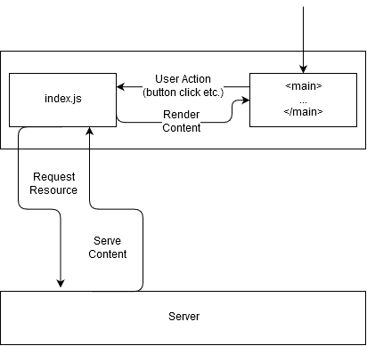

Community Draft
MusicStats is a Web Application that aggregates various music statistics and consumption patterns and makes them easy to visualize, either through an interactive map or as raw data through a public API.
According to The Verge, streaming made up over 80% of the music industry's total revenue, far surpassing digital and physical music sales, which are now regarded as obsolete and outdated ways of consuming music.
With so many streaming services competing over market share, it has become quite difficult to obtain a general overview of the music landscape - it is evident that certain genres like Pop and EDM are incredibly popular on Spotify, while Apple Music audiences tend to prefer genres such as Hip-hop and Trap.
MusicStats aims to bridge the divide between these services by aggregating the data and creating a visual model that accurately correlates it to demographics, time periods and geographical location.
We believe such a service could be incredibly useful for a large number of people, from music enthusiasts who want to trace people with a similar music taste as theirs to music industry executives looking to capitalize on a trend to artists trying to carve out a niche for themselves.
Our goals are to:
MusicStats is a Web Application based on the MVC architecture. It offers a Public API as well as a User Interface.
The diagram below presents an overview of the application and its architecture:
The application follows the Model View Controller pattern, having its functionalities divided in three layers:
The business logic of the application is in the Services layer where the the actual data collecting takes place.
The Repository layer is where application data is persisted. In the case of MusicStats, the statistics that are created as per the client's request are cached for efficiency and to avoid redundant look-ups - the statistics are pruned after a time to make sure they're not out of date.
MusicStats is an ES6 application in its entirety - the server uses the NodeJS runtime in conjunction with the Express framework. In addition, the server makes use of a non-relational database called MongoDB together with the Mongoose ODM.
MusicStats is a Single-Page Application, meaning all the user interactions and the server responses are confined to a single "page" - more explicitly, the server doesn't work in the traditional sense where it would serve static HTML content for each page the user requests, but instead sends data over the HTTP protocol in JSON format.
Upon visiting the starting page, the user is sent a blank HTML file and JavaScript code That fetches information from the server. Every user action sends an HTTP request over to the server, who then responds, and the response is handled by the client code.
Below is a diagram explaining the relationship between the Client and the Server:
Below are the essential Services at the core of MusicStats:
search(searchQuery: SearchQuery)
The SearchQuery object has the following schema:
SearchQuery {
genre: string[],
region: string[] (defaults to 'worldwide'),
startPeriod: date,
endPeriod: date,
song: string,
artist: string[],
album: string,
artistCountry: string,
recordLabel: string,
producers: string[],
writers: string[]
};
All the parameters are nullable, but a SearchQuery is considered to be
redundant if it doesn't have at least one of the following parameters: genre,
song, artist, album;
The function returns a SearchResponse object:
SearchResponse {
searchQuery: SearchQuery,
data: [
{
country: string,
popularity: number,
peakDate: date
},
...
]
};
The popularity field is determined using a formula that weighs streams
based on whether they're free streams or paid streams.
First, ElasticSearch checks whether the Search Query has already
been cached in the database - if it has, the retrieval is super quick because there is no need
to fetch the data all over again.
If the SearchQuery isn't in the Database, Elastic Search triggers the Scavenger Service
for data retrieval.
The Service also correlates the SearchQuery to other documents in the Database with
similar parameters - for example, if the SearchQuery contains multiple genres, the
service will aggregate data from all the records in the Database containing one of those genres and
weighs them appropriately for generating statistics such as "people who listen to Pop-Rock also listen to
Psychedelic Rock, Trance etc."
scavenge(searchQuery: SearchQuery): SearchResponse
ScavengerService deals with fetching data from public API's and/or web scraping
to obtain a SearchResponse object.
ScavengerService class has a member called apiList:
apiList = [
{
apiEndPoint: 'https://api.spotify.com/search',
requiredParams: string[],
responseBody: {...},
...
},
...
];
For each element of apiList, the scavenging service will attempt to fetch
as much relevant data as possible and will aggregate it in the end and streamline it into
a cohesive SearchResponse.
Upon obtaining a SearchResponse, the scavenging service caches it in the database.
MapService is a client-side service that deals with piping data to the interactive
map. It sends the SearchQuery to the server and awaits a SearchResponse and
can handle errors.
Takes a SearchResponse and iterates through the data array plotting the
results by country and modelling a graph to be projected onto the Interactive Map.
The Client-side App uses an SVG Map for data visualization. It will use a JavaScript library for working with SVG Maps.
Below is a list of API's and Websites that MusicStats can use for gathering data:
End-point: api/searchRequest type: GET
Request
Content-Type: application/json
body: {
genre: string[],
region: string[] (defaults to 'worldwide'),
startPeriod: date,
endPeriod: date,
song: string,
artist: string[],
album: string,
artistCountry: string,
recordLabel: string,
producers: string[],
writers: string[]
};
Response
Content-Type: application/json
status: 200 OK
body {
searchQuery: SearchQuery,
data: [
{
country: string,
popularity: number,
peakDate: date
},
...
]
};